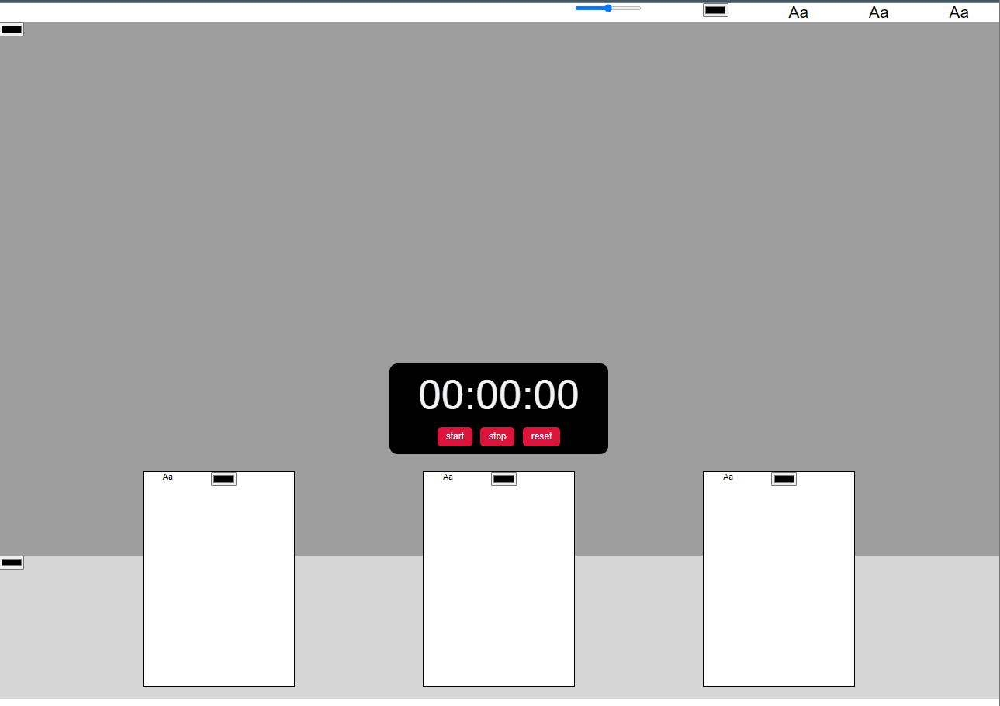

To get up to grips with making layouts using css I had to make an assignment in which I had to make multiple pages with different layouts, and some of them we’re actually pretty complex and a lot different compared to typical layouts. I had to work with multiple containers, which I didn’t use much before, but know I understand them pretty well and I tried out negative margins and z-index for the first, which actually are two really powerful tools in css, since you can do a lot of things with them. 